02_1_memory
STM32 - память
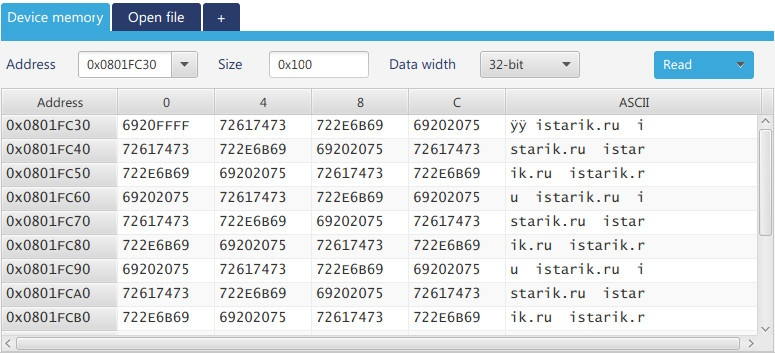
Здравствуйте.
В статье рассказано про организацию памяти микроконтроллера stm32, использования flash'а для хранения пользовательских данных, и про всякие пользовательские биты/биты защиты.
Память ядра
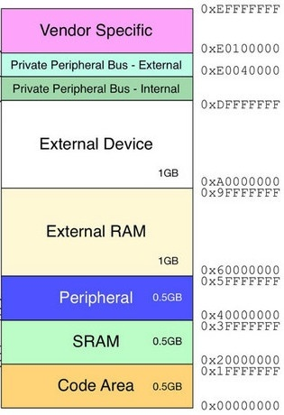
Конечно же в вашем микроконтроллере нет никаких гигабайтов памяти
 однако камень 32-х битный, а значит можно адресовать
однако камень 32-х битный, а значит можно адресовать Для примера часть адресов блока
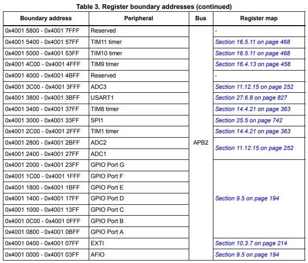
Reference manual — rm0008 стр. 51
Если попробовать прочитать зарезервированный адрес…
volatile uint32_t var = *(uint32_t*)0x40015800;То получим Hard Fault…
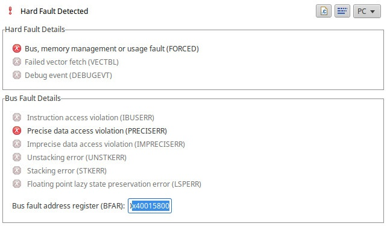
Прежде чем продолжать, надо скачать программу STM32CubeProgrammer с помощью которой можно ковыряться в микроконтроллере. Прога хороша тем, что есть варианты для
 и
и 
Запускаем и жмём Connect, подключатся можно через ST-Link или UART…
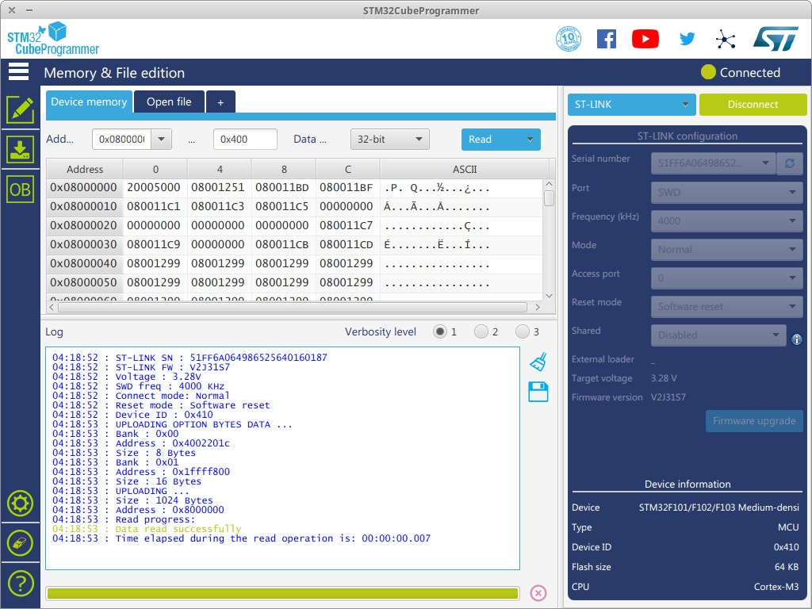
Нажимаем верхнюю левую кнопку (с карандашиком), и на вкладке Device memory видим программу залитую в камень. Можно указать адрес, с которого читать (по умолчанию стоит начальный адрес флеш-памяти) и сколько байт прочитать. Кнопочка Read считывает данные и показывает как на картинке. Если вместо Read выбрать Save As, то программа сдампится в указанный файл (надо только размер считываемых данных правильно указать, а то по умолчанию 1К).
другие функции CubeProgrammer
Если нажать вкладку Open file, то можно открыть какой-нибудь .hex или .bin файл прямо в программе.
Кнопка открывает интерфейс для загрузки прошивки в МК…
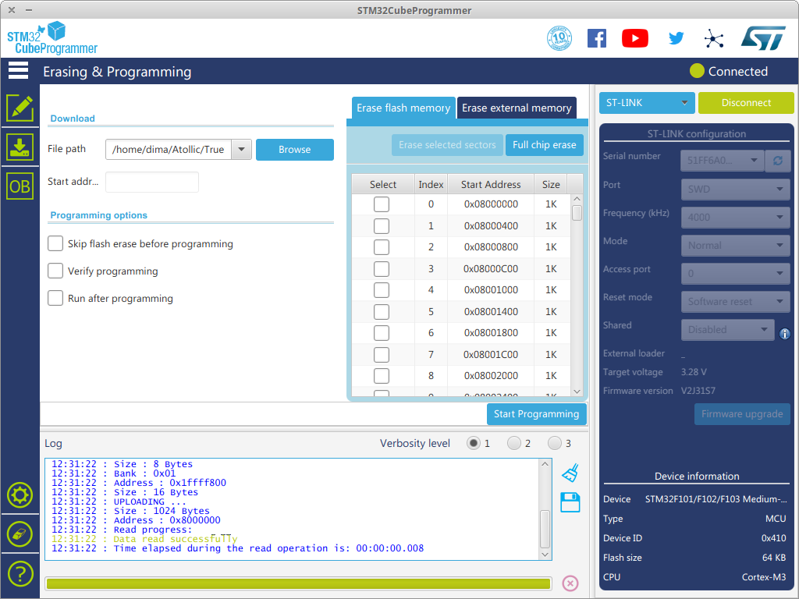
Выбираем нужный файл, очищаем флеш полностью (Full chip erase) или выборочные страницы, и жмём Start Programming.
— что-то связанное с внешним загрузчиком или внешним девайсом, не знаю, не вникал.
— очищает флеш.
Кнопка открывает интерфейс для загрузки прошивки в МК…
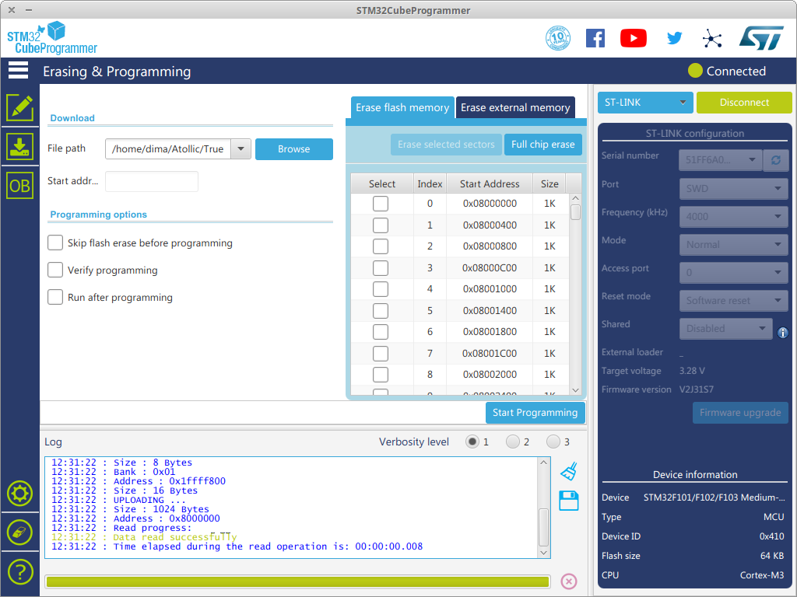
Выбираем нужный файл, очищаем флеш полностью (Full chip erase) или выборочные страницы, и жмём Start Programming.
— что-то связанное с внешним загрузчиком или внешним девайсом, не знаю, не вникал.
— очищает флеш.
В нижней части лог подключения, а справа-снизу полезная информация о вашем МК. Здесь интересны два пункта…
Device — серия микроконтроллера и плотность (Medium-density).
Некоторые микроконтроллеры stm32, в рамках одной серии, например популярный F103, он же BluePill, выпускается не только в разных корпусах с разным количеством «ножек», но и разной плотности (объёмом флеш-памяти)...
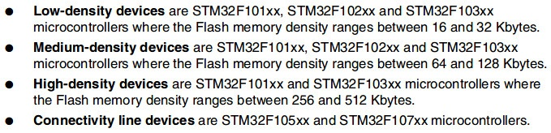
Connectivity line devices — это, на сколько я понимаю, микроконтроллеры которые умеют работать с интернетом. Programming manual — PM0075 стр. 5.
Device ID — код, который зашит в системный бутлоадер, и по нему ST-Link определяет что это за микроконтроллер.
коды
Теперь нажмём кнопочку чтоб появился список Option bytes…
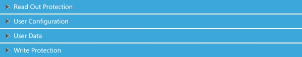
… и вернёмся к изучению памяти.
Всё что выше
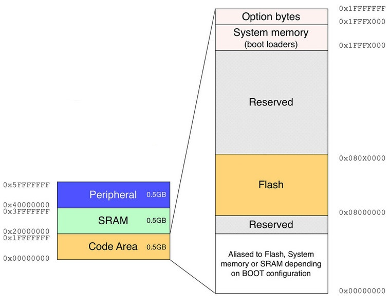
Option bytes — здесь находятся различные биты для настройки МК. Защита от чтения/записи, включение/отключение вачдогов, и несколько пользовательских битов для хранения какой-либо инфы.
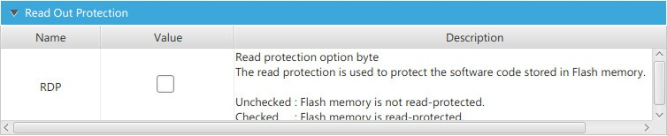
Бит RDP — если установить, то нельзя будет ни прочитать прошивку, ни загрузить новую. Чтобы установить, нужно поставить галочку, нажать кнопку Apply и обресетить МК. Снимается так же. При снятии защиты, существующая в МК прошивка будет удалена. Такой механизм гарантирует невозможность прочесть прошивку в залоченом камне.
В более серьёзных камнях RDP имеет несколько уровней…
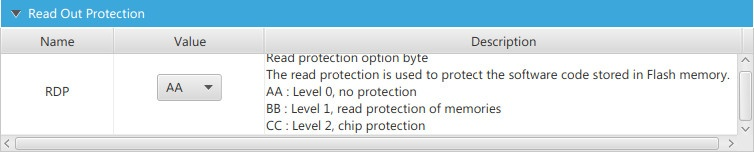
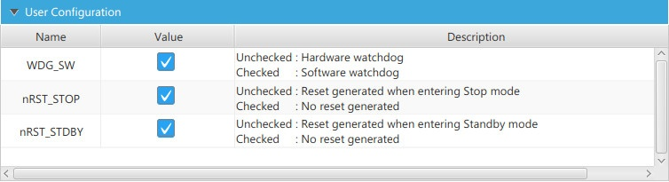
Тут комментировать особо нечего, думаю и так всё понятно. Однако очень не рекомендую снимать галочку с вачдога — камень будет постоянно ресетится. Настройки применяются так же, галочку сняли/поставили, и кнопка Apply. В более мощных МК есть доп. настройки.
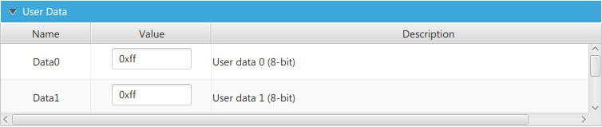
Сюда можно сохранить какие-то свои данные, правда не много

Защита от записи конкретных страниц флеш-памяти. К этому вернёмся чуть позже.
System memory — это область в которой располагается системный загрузчик (bootloader), он зашивается на заводе при изготовлении, его нельзя ни удалить, ни изменить.
Bootloader
Bootloader это такая небольшая программка, которая позволяет прошивать микроконтроллер через различные интерфейсы. Если подтянуть пин BOOT_0 к «земле» и нажать ресет, то загрузиться bootloader и будет ожидать поступления новой прошивки. Простенькие камни, типа F103, можно прошивать только через USART, а более «крутые» позволяют делать это и через другие интерфейсы. Посмотреть это можно в AN2606 стр. 25. Например вот…
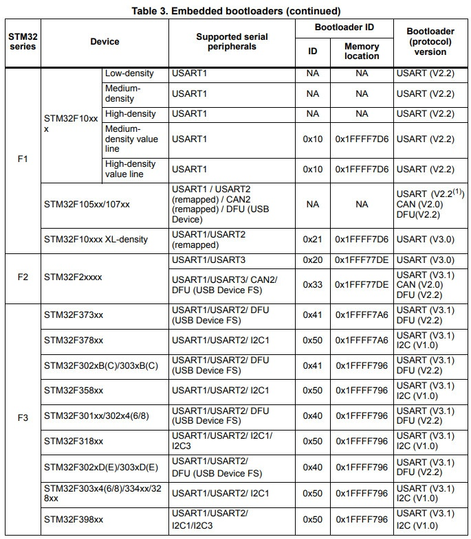
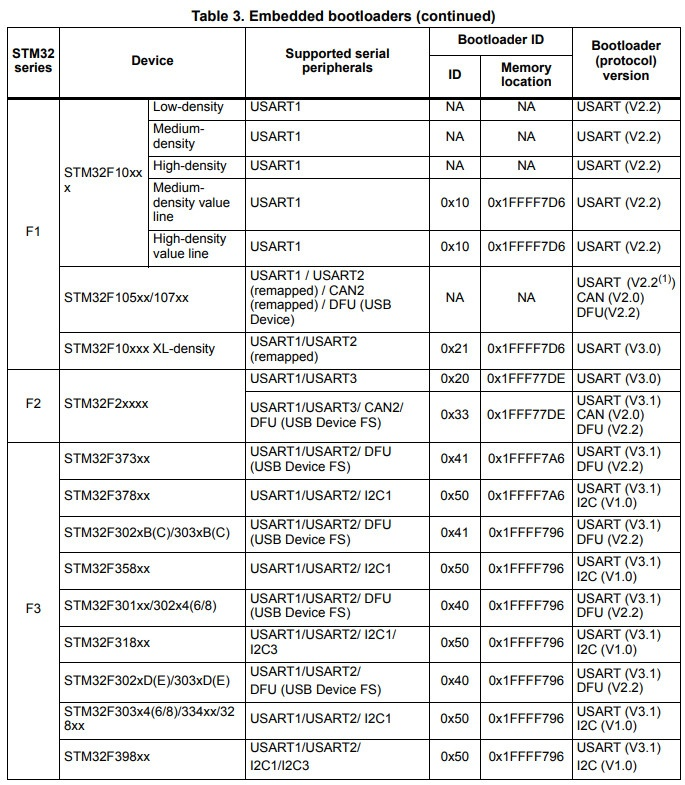
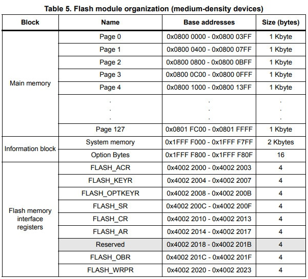
RM0008 стр. 55. (Рис. 1)
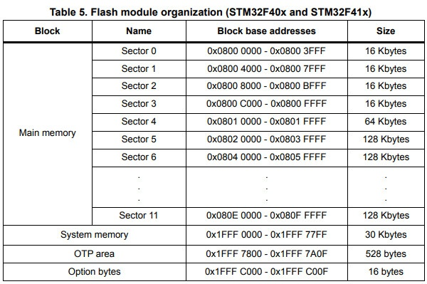
Часть страниц по 16К, одна 64К, а часть по 128К. Здесь страницы называются секторами.
Тут есть один любопытный момент. Компания
Во-первых в мануале нет камней с 64-мя страницами (см. рис. 1), а во-вторых, не смотря на то, что ST-Link показывает объём 64К, у всех моих F103C8хх читаются и пишутся все 128 страниц. То есть программу размером больше 64К залить через TrueStudio не удаётся, а вот производить чтение/запись этих областей из своей программы можно. Да и STM32CubeProgrammer их тоже совершенно спокойно читает…
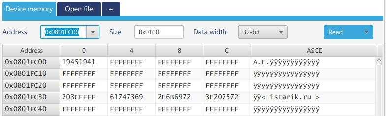
127-я страница на камне F103C8хх.
пояснения
Если я правильно понимаю, то такая ситуация с памятью связана с тем, что на заводе делают камни с 128К, а после проверки, если тестирование проходит больше 64К, но меньше 128К, то маркируют как 64К (F103C8хх). В общем это не брак, и не «китайская» подделка. А использовать «незадекларированную» область можно на свой страх и риск, сохранность записанных туда данных производитель не гарантирует.
Выше я говорил что мы вернёмся к вопросу защиты конкретных страниц от чтения/записи…
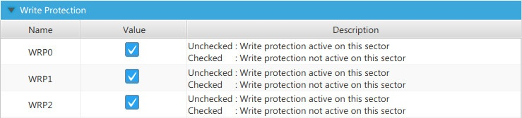
Биты WRPх защищают сразу по несколько страниц. Количество защищаемых страниц зависит от плотности (density) МК.
Вот вырезка из Programming manual стр. 21…
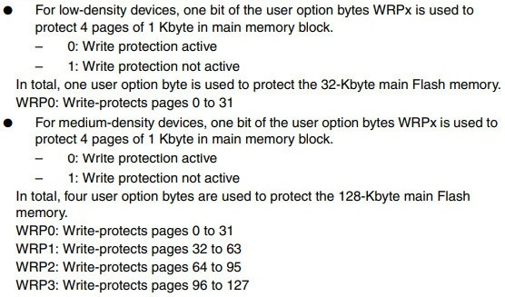
У low-density используется только WRP0 и защищает весь флеш, а у medium-density можно делать это выборочно. Зачем нужны остальные биты (WRP4 и т.д.) я так и не понял, может они зарезервированы.
Такой способ выборочной защиты очень удобен тем, что можно заблокировать область где находится программа, а остальное использовать для хранения каких-то данных и не боятся затереть программу, ну или наоборот, защитить какие-то данные, которые вы положили например в конец флеша.
CCM SRAM — у некоторых микроконтроллеров есть дополнительная оперативная память под названием Core Coupled Memory. Эта память подключена непосредственно к ядру, благодаря чему скорость доступа и исполнение кода будет быстрее чем в обычной SRAM. Соответственно в CCM выгодно размещать всякие статистические переменные/массивы, а при желании можно перенести туда стек/кучу/.data/.bss.
Cледует помнить, что доступ к CCM имеет только процессор, а значит DMA не сможет к ней обратиться. CCM бывают разные для разных микроконтроллеров, поэтому прежде чем начинать использование следует изучить документацию. Ещё инфа, и ещё инфа.
В качестве примера я перенёс пару массивов в ССМ (среда TrueStudio, камень F303)…
Объявляем массивы глобально:
//char array[] = "istarik.ru";
//char array2[100] = {0,};
char array[] __attribute__((section (".ccmram"))) = "istarik.ru";
char array2[100] __attribute__((section (".ccmram"))) = {0,};Вуаля, они лежат где надо…
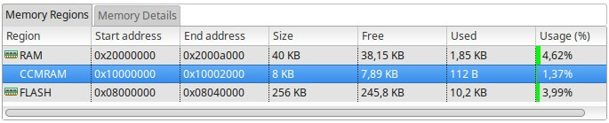
Прежде чем говорить о переносе стека/кучи/.data/.bss в ССМ, я очень кратко и обобщённо поясню что означают эти термины:
Стек — область памяти в ОЗУ, куда сохраняется адреса программы в момент возникновения прерывания или перехода в другую функцию.
чуть подробнее
Пошагово выглядит это так:
Наша программа работает-работает (указатель «бежит» последовательно по адресам).
Происходит прерывание — указатель перепрыгивает в обработчик этого прерывания.
Адрес, где находилась программа в момент возникновения прерывания, записывается в стек (чтоб запомнить куда возвращаться).
После того как обработка прерывания закончится, из стека вытаскивается адрес на который нужно вернуться.
То же самое происходит при переходе из одной функции в другую, например из 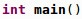 в 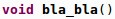
Технически, стек можно представить в виде стопки книг где нельзя взять вторую сверху книгу не сняв предварительно первую. То есть стек работает по принципу LIFO буфера (Last In First Out) — «последним пришёл, первым вышел». Такая организация очень хорошо себя оправдывает. Представьте себе такую ситуацию:
Указатель перепрыгнул из функцииmain() в bla_bla() .
В стек записался адрес того места откуда выпрыгнул указатель.
Идёт обработка функцииbla_bla() и в этот момент происходит прерывание.
В стек записывается (ложится поверх предыдущего) ещё один адрес, и указатель переходит в обработчик прерывания.
В результате на стеке лежат два адреса — адрес, на котором была приостановлена функцияmain() , а поверх него адрес на котором приостановлена функция bla_bla() .
По окончании обработки прерывания система лезет в стек, «снимает со стопки» самый последний адрес, переходит по нему и заканчивает выполнение функцииbla_bla() с того места где она была прервана. Больше этот адрес не нужен и он выкидывается в помойку, на стеке остаётся адрес приостановки функции main() .
Как только функцияbla_bla() завершается, система опять лезет в стек и «снимает» адрес приостановки функции main() . Адрес опять же летит в помойку, а функция main() продолжает выполняться. Таким образом, снимая «книжку за книжкой» система не сможет вернуться куда-то не туда и нарушить целостность программы.
Наша программа работает-работает (указатель «бежит» последовательно по адресам).
Происходит прерывание — указатель перепрыгивает в обработчик этого прерывания.
Адрес, где находилась программа в момент возникновения прерывания, записывается в стек (чтоб запомнить куда возвращаться).
После того как обработка прерывания закончится, из стека вытаскивается адрес на который нужно вернуться.
То же самое происходит при переходе из одной функции в другую, например из 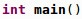 в 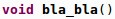
Технически, стек можно представить в виде стопки книг где нельзя взять вторую сверху книгу не сняв предварительно первую. То есть стек работает по принципу LIFO буфера (Last In First Out) — «последним пришёл, первым вышел». Такая организация очень хорошо себя оправдывает. Представьте себе такую ситуацию:
Указатель перепрыгнул из функции
В стек записался адрес того места откуда выпрыгнул указатель.
Идёт обработка функции
В стек записывается (ложится поверх предыдущего) ещё один адрес, и указатель переходит в обработчик прерывания.
В результате на стеке лежат два адреса — адрес, на котором была приостановлена функция
По окончании обработки прерывания система лезет в стек, «снимает со стопки» самый последний адрес, переходит по нему и заканчивает выполнение функции
Как только функция
Помимо адресов, в стек сохраняются локальные переменные функций и параметры передающиеся в функции. То есть в момент вызова функции, вместе с адресом для возврата, на стек кладутся ещё и локальные переменные, которые есть в этой функции. Как только функция отработает, эти переменные будут сняты со стека и уничтожены.
Куча — эта область ОЗУ, которая используется для динамического выделения памяти в процессе работы программы. То есть, когда вы делаете malloc/calloc/realloc, то память выделяется на куче.
bss — область ОЗУ, сюда помещаются
data — область ОЗУ, сюда помещаются инициализированные глобальные переменные (uint8_t var = 0;).
text — Flash, здесь лежит сама программа.
Выглядит всё это хозяйство следующим образом…
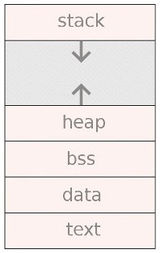
Стек начинается от самого большого адреса и при увеличении размера ползёт вниз (записывая данные в меньшие адреса), а куча наоборот, при увеличении размера ползёт вверх, поэтому при выделении памяти на куче нужно следить чтоб эти области не налезли друг на друга.
пояснение
Чтоб лучше понять иллюстрацию выше, откройте файл STM32F103C8_FLASH.ld и найдите там такие строки…
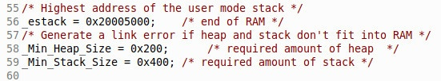
Нас интересует переменная_estack , которая указывает на конец оперативной памяти. У микроконтроллера stm32F103c8 оперативная память располагаться в области от 0x20000000 до 0x20005000 , что равно 20480 байтам (20Кб). Визуально это выглядит так…
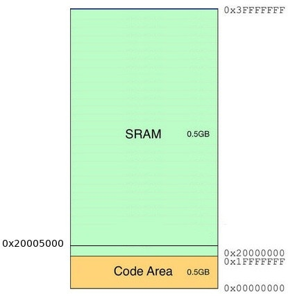
Вся наша оперативка находится внутри узенькой полоски, а всё что выше не существует. То есть стек, куча, bss и data находится внутри этой полоски, а text в жёлтой области.
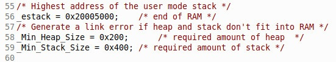
Нас интересует переменная
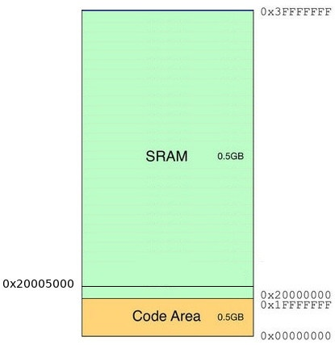
Вся наша оперативка находится внутри узенькой полоски, а всё что выше не существует. То есть стек, куча, bss и data находится внутри этой полоски, а text в жёлтой области.
Посмотреть сколько места занимают некоторые данные можно в среде разработки. Вот картинка из TrueStudio…
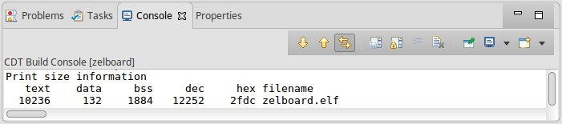
Чтоб перенести какую-то из этих областей в ССМ, нужно подкорректировать файл компоновщика (или линковщика, называйте как вам удобнее) с расширением
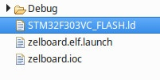
Находим там интересующие нас блоки…
.data :
{
. = ALIGN(4);
_sdata = .; /* create a global symbol at data start */
*(.data) /* .data sections */
*(.data*) /* .data* sections */
. = ALIGN(4);
_edata = .; /* define a global symbol at data end */
} >RAM AT> FLASH
...
.bss :
{
/* This is used by the startup in order to initialize the .bss secion */
_sbss = .; /* define a global symbol at bss start */
__bss_start__ = _sbss;
*(.bss)
*(.bss*)
*(COMMON)
. = ALIGN(4);
_ebss = .; /* define a global symbol at bss end */
__bss_end__ = _ebss;
} >RAM
...
._user_heap_stack :
{
. = ALIGN(4);
PROVIDE ( end = . );
PROVIDE ( _end = . );
. = . + _Min_Heap_Size;
. = . + _Min_Stack_Size;
. = ALIGN(4);
} >RAMМеняем у каких-нибудь блоков, или у всех сразу, слово
} >CCMRAM AT> FLASH
...
} >CCMRAM
...
} >CCMRAMВ результате получаем — до:

После:
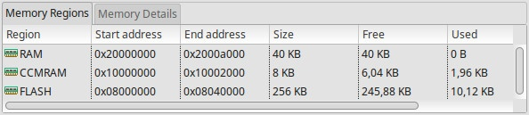
Инфа взята тут.
Запись данных во флеш
У большинства микроконтроллеров stm32 (кроме серии L0) нету EEPROM, поэтому сохранять пользовательские данные приходится во флеш-памяти. Количество циклов записи 10000.
Чтобы записать во флеш какие-то данные нужно вначале её очистить (во время очистки все биты заполняются единицами — 0xFF). Очистка происходит постранично/посекторно.
Очистка одной страницы на F103…
#define MYADDR ADDR_FLASH_PAGE_127
static FLASH_EraseInitTypeDef EraseInitStruct; // структура для очистки флеша
EraseInitStruct.TypeErase = FLASH_TYPEERASE_PAGES; // постраничная очистка, FLASH_TYPEERASE_MASSERASE - очистка всего флеша
EraseInitStruct.PageAddress = MYADDR; // адрес 127-ой страницы
EraseInitStruct.NbPages = 1; // кол-во страниц для стирания
//EraseInitStruct.Banks = FLASH_BANK_1; // FLASH_BANK_2 - банк №2, FLASH_BANK_BOTH - оба банка
uint32_t page_error = 0; // переменная, в которую запишется адрес страницы при неудачном стирании
char str[64] = {0,};
////////////////////////////// ОЧИСТКА ///////////////////////////////////
HAL_FLASH_Unlock(); // разблокировать флеш
if(HAL_FLASHEx_Erase(&EraseInitStruct, &page_error) != HAL_OK)
{
uint32_t er = HAL_FLASH_GetError();
snprintf(str, 64, "ER %lu\n", er);
HAL_UART_Transmit(&huart1, (uint8_t*)str, strlen(str), 100);
while(1){}
}
HAL_UART_Transmit(&huart1, (uint8_t*)"Erase OK\n", 9, 100);
HAL_FLASH_Lock(); // заблокировать флешОбъявляем структуру в которую заносятся параметры очистки:
Ну, а дальше стираем страницу/страницы, и возвращаем блокировку. Если что-то пойдёт не так, то программа выведет ошибку и зациклится.
После этой операции вся страница готова для записи. Необязательно записывать всю страницу за один раз, можно добавлять записи по мере необходимости, при условии что новые данные не будут записываться поверх старых.
почему 0xFF
Почему нужно очищать (заполнять значениями 0xFF) память?
Дело в том, что когда происходит запись байта в ячейку, то биты в этой ячейки не просто так берут и перезаписываются, а совершается операция логического «И» над тем что есть в ячейке и новым значением.
Наглядно это выглядит так. Ячейка у нас очищена (биты заполнены единицами) и мы записываем в неё число 7 (0х07)…
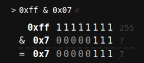
Выполняется логическое «И», и в ячейку записывается нужное нам число 7.
А теперь допустим что мы хотим записать в эту же ячейку число 13 (0x0d) поверх старого значения…

Выполняется логическое «И» между старым значением 0х07 и новым 0x0d. В результате вместо желаемого числа 13, в ячейку записывается число 5.
Дело в том, что когда происходит запись байта в ячейку, то биты в этой ячейки не просто так берут и перезаписываются, а совершается операция логического «И» над тем что есть в ячейке и новым значением.
Наглядно это выглядит так. Ячейка у нас очищена (биты заполнены единицами) и мы записываем в неё число 7 (0х07)…
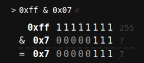
Выполняется логическое «И», и в ячейку записывается нужное нам число 7.
А теперь допустим что мы хотим записать в эту же ячейку число 13 (0x0d) поверх старого значения…
Выполняется логическое «И» между старым значением 0х07 и новым 0x0d. В результате вместо желаемого числа 13, в ячейку записывается число 5.
Запись
У разных МК можно записывать разную длину «слова», например у F103 можно записать «слова» размером 16, 32 и 64 бита. Подсмотреть это можно в файле
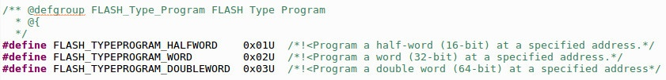
Запишем два 16-ти (FLASH_TYPEPROGRAM_HALFWORD) битных числа в начало только что очищенной страницы…
HAL_FLASH_Unlock(); // разблокировать флеш
uint32_t address = MYADDR; // запись в начало страницы 127
uint16_t idata[] = {0x1941, 0x1945}; // массив из двух чисел для записи
for(uint8_t i = 0; i < 2; i++)
{
if(HAL_FLASH_Program(FLASH_TYPEPROGRAM_HALFWORD, address, idata[i]) != HAL_OK)
{
uint32_t er = HAL_FLASH_GetError();
snprintf(str, 64, "ER %lu\n", er);
HAL_UART_Transmit(&huart1, (uint8_t*)str, strlen(str), 100);
while(1){}
}
address = address + 2;
}
HAL_UART_Transmit(&huart1, (uint8_t*)"Write 16 bits OK\n", strlen("Write 16 bits OK\n"), 100);
HAL_FLASH_Lock(); // заблокировать флешРазблокируем флеш, указываем адрес начала страницы (не обязательно начало, можно в любое место), записываем во флеш массив из двух чисел, а в цикле увеличиваем адрес на два. После этого блокируем память.
Если записывать 32-х (FLASH_TYPEPROGRAM_WORD) битное число, то увеличим адрес на четыре, а если 64-х (FLASH_TYPEPROGRAM_DOUBLEWORD) битное, то на 8. Если в дальнейшем захотите добавить в эту страницу ещё что-то, то нужно запомнить адрес.
Идём в STM32CubeProgrammer, вписываем адрес 127-ой страницы и смотрим чего понаписали…
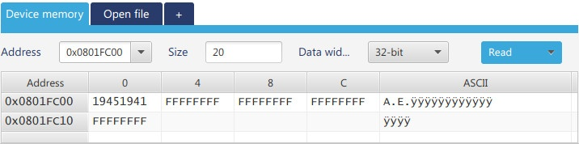
Всё окей. Не забывайте нажимать Disconnect
Прочитаем то, что записали…
address = MYADDR;
for(uint16_t i = 0; i < 2; i++)
{
uint16_t dig16 = *(uint16_t*)address; // читаем число по адресу
snprintf(str, 64, "READ_%d Dec: %d Hex: 0x%04X\n", i, dig16, dig16);
HAL_UART_Transmit(&huart1, (uint8_t*)str, strlen(str), 100);
address = address + 2;
}Разблокировать не надо, а адрес опять же увеличиваем на два. Получаем ожидаемое…
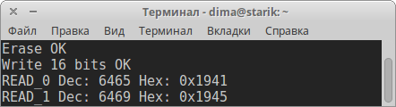
Чтоб записать 8-ми битное значение (не смотря на то, что производитель не предоставил такой возможности), надо просто записывать по два байта в одно 16-ти битное «слово» со сдвигом. Всё происходит почти так же как и с 16-ти битным числом…
HAL_FLASH_Unlock(); // разблокировать флеш
address = MYADDR + 4; // смещаем адрес на 4 байта
uint8_t data[] = " istarik.ru ";
uint16_t data16 = 0, index0 = 0, index1 = 1;
uint16_t len = strlen((char*)data);
if(len % 2 != 0) // проверка кол-ва символов в массиве на чётность
{
snprintf(str, 64, "ER uneven buff %d\n", len);
HAL_UART_Transmit(&huart1, (uint8_t*)str, strlen(str), 100);
while(1){}
}
for(uint16_t i = 0; i < len / 2; i++)
{
data16 = ((uint16_t)data[index1] << 8) | data[index0];
index0 = index0 + 2;
index1 = index1 + 2;
if(HAL_FLASH_Program(FLASH_TYPEPROGRAM_HALFWORD, address, data16) != HAL_OK)
{
uint32_t er = HAL_FLASH_GetError();
snprintf(str, 64, "ER %lu\n", er);
HAL_UART_Transmit(&huart1, (uint8_t*)str, strlen(str), 100);
while(1){}
}
address = address + 2;
}
HAL_FLASH_Lock(); // заблокировать флеш
HAL_UART_Transmit(&huart1, (uint8_t*)"Write 8 bits OK\n", strlen("Write 8 bits OK\n"), 100);Увеличиваем адрес на 4 (чтоб добавить данные вслед за предыдущими), записывать будем массив, размер которого должен быть кратен двум (для этого сделана проверка), а в цикле запихиваем два символа в одно 16-ти битное «слово» и отправляем по адресу.
Проверяем…
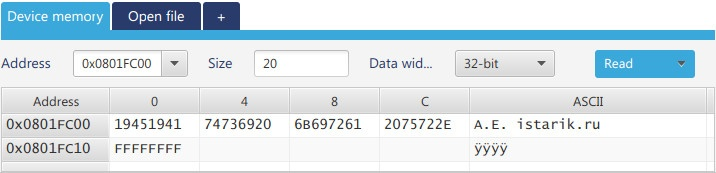
Читаем…
address = MYADDR + 4;
char buf[64] = {0,};
for(uint16_t i = 0; i < len; i++)
{
buf[i] = *(uint32_t*)address++;
}
snprintf(str, 64, "Str: %s\n", buf);
HAL_UART_Transmit(&huart1, (uint8_t*)str, strlen(str), 100);
Читать можно по одному 8-ми битному символу.
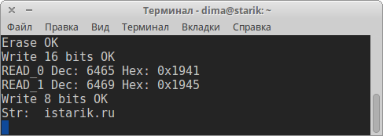
Наши преподаватели
Спасибо за проявленный интерес к ракетостроению и добро пожаловать к нам на курс.

Преподаватель 1
Исследователь, научный сотрудник
Специальзируется на теме 1

Преподаватель 2
Инженер программист
Специальзируется на теме 2

Преподаватель 3
Инженер электронщик
Специальзируется на теме 3